GoLang实现红黑树
用Golang实现红黑树算是一次尝试，毕竟工作环境没用到，不知道以后会不会用。自己也是看着玩，开阔一下思路。从我开始看Golang的doc到写这篇文章利用的是大概2周中的业余时间，所以Golang的语法掌握的还有欠缺；很多特性，例如高并发等都还没有测试，如文中出现错误或不合理的地方，请指正。
本文应用的基本逻辑参考自wiki的 红黑树，依据golang的语言特性部分结构可能稍有改动。同时这篇文章里也加入了我在实现过程中的想法和实现时可能会遇到的问题。wiki上的红黑树中文版本，不过建议直接看英文版本，不知道是翻译的原因还是版本没跟上，中文版本很多有助于理解的重要信息丢失了。而且最后附的源码我也大概看了一下，和上面解释的逻辑在细节上也稍有不同，如果看的话要注意。 由于代码比较占空间，我在文章里只说重点代码结构，完整代码在我的github上，有兴趣的可以去看一下，地址： rbtree源码
进入正题，下面我将介绍红黑树基于Golang的实现，及实现过程中我自己的理解。主要有以下内容：
1. 红黑树特点
红黑树的特点说明来自wiki，我这里简单翻译一下，括号里面的注是我自己的理解。
节点不是红色就是黑色
节点的根是黑色。这条有时会被忽略。过程中根一般由红色转为黑色，却没必要由黑色转为红色，这条规则会在分析时有一定影响（注：没明白这影响指什么……）
所有的空叶子节点都是黑色的（注：注意是空叶子节点，这个特性在插入里面用不到；在节点删除里面起作用，有点小坑，讲删除时会提到）
如果一个节点是红色，那么它的两个子节点都是黑色（注：也就是说树里面不会出父子节点都是红色的情况）
从任意一个节点到这个节点后代的每一个空叶子节点的直接路径都要经过相同个数的黑色节点。这里有几个定义：从根节点到某个节点所经过的黑色节点的数目成为这个节点的 black depth；从根节点到叶子节点的所经过的黑色节点数目成为这个树的 black-height
black-height可以用来计算时间复杂度，通过性质4、5可以计算出红黑树查询的时间复杂度为 ，这里不细证明。
再补充一点，每次插入的节点初始时都是红色，这个在添加的时候会说到，提前说一下有助于理解。
后两条是重点，当然，从这两条也能看出红黑树并不是一个完全的平衡二叉树，它的平衡在于黑色节点的平衡，上图（注：每个叶子节点都有2个空的叶子节点，文章中所有红黑树的图里面不是必要时我就不画了，显得太乱）:
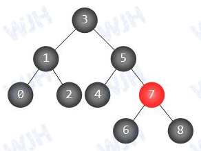
红黑树的特征就是这些，下面我们将按照这些特征利用Golang建树
2. 红黑树结构的建立
2.1. 节点结构
节点有红黑两色，我们先定义2个常量。布尔型足够：
const (
// RED 红树设为true
RED bool = true
// BLACK 黑树设为false
BLACK bool = false
)然后是节点结构，包括树共有的特性：节点的值，指向父节点、左右儿子节点的3个指针；还有红黑树特有的：颜色。下面是树的结构：
// RBNode 红黑树
type RBNode struct {
value int64
color bool
left, right, parent *RBNode
}还有一些查找父节点，兄弟节点的方法，很简单，就不细说了。
// getGrandParent() 获取父级节点的父级节点
func (rbnode *RBNode) getGrandParent() *RBNode {'代码略……'}
// getSibling() 获取兄弟节点
func (rbnode *RBNode) getSibling() *RBNode {'代码略……'}
// GetUncle() 父节点的兄弟节点
func (rbnode *RBNode) getUncle() *RBNode {'代码略……'}2.2. 树的结构
树的结构只包含一个根节点Root，还有很多方法，等介绍插入删除时再细说，代码结构如下:
type RBTree struct {
root *RBNode
}2.3. 树的旋转
节点的结构里面有个方法很重要，是整个红黑树的一个核心功能，那就是树的旋转。添加和删除过程中都多次应用到了树的旋转。下面就讲一下旋转的细节。对旋转比较熟的就可以直接看下一部分了。
先定义旋转常量：
const (
// 左旋
LEFTROTATE bool = true
// 右旋
RIGHTROTATE bool = false
)树的旋转包括左旋和右旋，下面图解说明
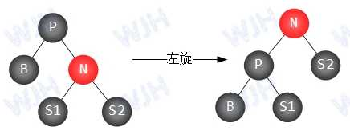
| 左旋：以P为轴心左旋，N原来的父节点P作为N节点的左孩子，原N节点的左孩子变为P节点的右孩子，左旋就完成了。 |
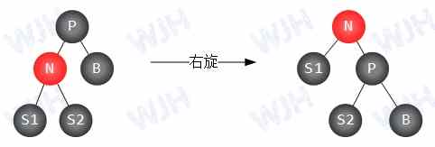
| 右旋：与左旋类似，只是把N节点的右孩子变为了P节点的左孩子。 |
|
旋转代码如下：
// rotate() true左旋/false右旋
// 若有根节点变动则返回根节点
func (rbnode *RBNode) rotate(isRotateLeft bool) (*RBNode, error) {
var root *RBNode
if rbnode == nil {
return root, nil
}
if !isRotateLeft && rbnode.left == nil {
return root, errors.New("右旋左节点不能为空")
} else if isRotateLeft && rbnode.right == nil {
return root, errors.New("左旋右节点不能为空")
}
parent := rbnode.parent
var isleft bool
if parent != nil {
isleft = parent.left == rbnode
}
if isRotateLeft {
grandson := rbnode.right.left
rbnode.right.left = rbnode
rbnode.parent = rbnode.right
rbnode.right = grandson
} else {
grandson := rbnode.left.right
rbnode.left.right = rbnode
rbnode.parent = rbnode.left
rbnode.left = grandson
}
// 判断是否换了根节点
if parent == nil {
rbnode.parent.parent = nil
root = rbnode.parent
} else {
if isleft {
parent.left = rbnode.parent
} else {
parent.right = rbnode.parent
}
rbnode.parent.parent = parent
}
return root, nil
}3. 节点插入
插入相对来说简单一些，首先是一个查找树的插入，然后是分治法进行树的变化以符合红黑树特征
3.1. 数据的插入
二叉查找树的插入方式，没啥好说的，直接上代码：
func (rbtree *RBTree) insertNode(pnode *RBNode, data int64) {
if pnode.value >= data {
// 插入数据不大于父节点，插入左节点
if pnode.left != nil {
rbtree.insertNode(pnode.left, data)
} else {
tmpnode := NewRBNode(data)
tmpnode.parent = pnode
pnode.left = tmpnode
rbtree.insertCheck(tmpnode)
}
} else {
// 插入数据大于父节点，插入右节点
if pnode.right != nil {
rbtree.insertNode(pnode.right, data)
} else {
tmpnode := NewRBNode(data)
tmpnode.parent = pnode
pnode.right = tmpnode
// 插入验证
rbtree.insertCheck(tmpnode)
}
}
}3.2. 插入时树结构的检查及变化
检查分几种情况，下面依次说明：
-
要检查的节点没有父节点，意为此节点为root，则设置此节点的颜色为黑色（一开始提到过，插入时的节点初始时都是红色），直接返回，若不是根节点，则进行情况2的检查。
-
如果添加节点的父节点是黑色，那就省事儿多了。插入的是红色，不影响黑色数量，且由于父节点是黑色，不会出现父子节点都是红色的情况。性质4、5都不受影响。
-
若添加点的父节点也是红色，那就得考虑考虑了，这里应用了分治法，包括添加的节点N，N的父节点P，N的叔父节点U，N的祖父节点G。
下一步就是根据U节点的颜色进入不同流程，G左边的节点中有相邻的2个红色节点，肯定有一个要变成黑色，相应右边也要有变成黑色的点。这样，如果U是红色，则可直接变成黑色；若本身就是黑色，那就得用旋转的方法寻找平衡了，下面先说U节点是红色的情况。 a) 若U为红色，则P与U都直接变成黑色，这样这部分每条路线上都多了一个黑色节点，需再减去一个以达到外部的平衡，然后把G改为红色。这样又会出现一个问题，那就是G的父节点的颜色未知，如果也是红色，那就又不符合规则了。又出现了要检查的内容。我们直接把这个问题扔给上一级，让上一级去解决，直到解决完成，即用递归的方式处理（N或P是左孩子还是右孩子没有关系，这里为了方便，只写出一个）。
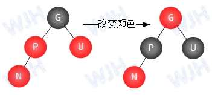
b) 若U为黑色，则进入旋转平衡阶段。
3.3. 插入节点时的树的旋转情况
内容比较多，就拿出来单说了。这里是红黑树插入的重要步骤。树的旋转需注意把根节点的情况考虑进去，我们先写左旋和右旋的方法，实现如下：
func (rbtree *RBTree) rotateLeft(node *RBNode) {
if tmproot, err := node.rotate(LEFTROTATE); err == nil {
if tmproot != nil {
rbtree.root = tmproot
}
} else {
log.Printf(err.Error())
}
}以上是左旋的实现，右旋类似，不再赘述。
下面是旋转平衡的几种情况：
-
N是P的左（右）孩子，P同样是G的左（右）孩子，则只需以G为轴进行左（右）旋，然后把P改为黑色，G改为红色。左右黑色节点数目不变，且不影响外部的规则。
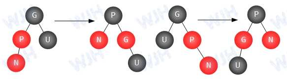
图 5. 旋转 -
N是P的右（左）孩子，而P是G的左（右）孩子 我们需以P为轴左旋（右边那种情况为右旋）。这时我们会发现树现在变成了1的情况，再用1的逻辑去处理就行了，同样这种旋转方式不会影响每个路径上的黑色节点数目，且结果顶点处的节点为黑色，不破坏外部的数据。
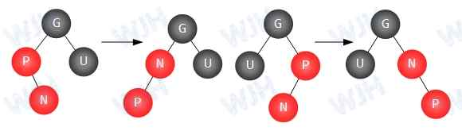
图 6. 旋转
这样，插入的情况便都考虑到了，下面是实现代码：
func (rbtree *RBTree) insertNode(pnode *RBNode, data int64) {
if pnode.value >= data {
// 插入数据不大于父节点，插入左节点
if pnode.left != nil {
rbtree.insertNode(pnode.left, data)
} else {
tmpnode := NewRBNode(data)
tmpnode.parent = pnode
pnode.left = tmpnode
rbtree.insertCheck(tmpnode)
}
} else {
// 插入数据大于父节点，插入右节点
if pnode.right != nil {
rbtree.insertNode(pnode.right, data)
} else {
tmpnode := NewRBNode(data)
tmpnode.parent = pnode
pnode.right = tmpnode
rbtree.insertCheck(tmpnode)
}
}
}
func (rbtree *RBTree) insertCheck(node *RBNode) {
if node.parent == nil {
// 检查1：若插入节点没有父节点，则该节点为root
rbtree.root = node
// 设置根节点为black
rbtree.root.color = BLACK
return
}
// 父节点是黑色的话直接添加，红色则进行处理
if node.parent.color == RED {
if node.getUncle() != nil && node.getUncle().color == RED {
// 父节点及叔父节点都是红色，则转为黑色
node.parent.color = BLACK
node.getUncle().color = BLACK
// 祖父节点改成红色
node.getGrandParent().color = RED
// 递归处理
rbtree.insertCheck(node.getGrandParent())
} else {
// 父节点红色，父节点的兄弟节点不存在或为黑色
isleft := node == node.parent.left
isparentleft := node.parent == node.getGrandParent().left
if !isleft && isparentleft {
rbtree.rotateLeft(node.parent)
rbtree.rotateRight(node.parent)
node.color = BLACK
node.left.color = RED
node.right.color = RED
} else if isleft && !isparentleft {
rbtree.rotateRight(node.parent)
rbtree.rotateLeft(node.parent)
node.color = BLACK
node.left.color = RED
node.right.color = RED
} else if isleft && isparentleft {
node.parent.color = BLACK
node.getGrandParent().color = RED
rbtree.rotateRight(node.getGrandParent())
} else if !isleft && !isparentleft {
node.parent.color = BLACK
node.getGrandParent().color = RED
rbtree.rotateLeft(node.getGrandParent())
}
}
}
}4. 节点删除
4.1. 删除节点的转换
删除主要有3种情况
-
要删除的节点N没有子节点，可直接删除，然后验证平衡性
-
要删除的节点N有一个子节点S，则需将S的父节点设为N的父节点P，如果N是P的左儿子节点，就把P的左子节点设成S，右边同理。
-
要删除的节点N有2个儿子S1和S2，这样直接删除会麻烦很多。我们利用一下排序二叉树的性质，进行一下转换。过程如下：
-
选择右子树中的节点作替换（左右无所谓，道理是一样的，我们以替换右子树中的节点为例）
-
找到节点N右子树中最靠左边的非空节点M（不一定是叶子节点），将M的值复制到N，然后把要删除的节点改为M，则转换成了删除节点中包含有一个子节点（或没有子节点）的问题，例如下图中我们如果要删除5，则寻找节点7的最左侧的非空节点6，将6复制到5的位置，然后排序树仍然成立（原来的6要删除了，不考虑在内）
-
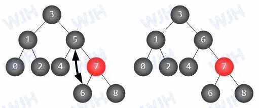
4.2. 删除含单个子节点的节点
删除含单个子节点的节点也包括删除没有子节点的节点。如果要删除的节点没有子节点，为了转换方便，我们需在没有子节点的节点上加上一个临时节点，颜色为黑色，作为左孩子还是右孩子都可以。新加的节点虽然暂时破环了平衡，但是不影响旋转等操作（下面处理过程中能看出来）。最后记得删除即可。
删除含单个子节点的节点也包括几种情况：
-
删除的是根节点，且节点没有子节点，则直接删除，root置空。
-
删除的是根节点，且节点只有一个子节点，直接删除，将根节点指向子节点，并设置颜色为黑色
-
删除的是非根节点，又分几种情况；
-
要删除的节点是红色，则它的父节点与子节点（如果有的话）都是黑色，直接把子节点或空节点替换要删除节点的位置即可，不会影响黑节点的平衡
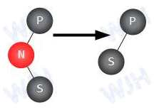
图 8. 删除的节点是红色 -
要删除的是黑色节点，但它的子节点存在且是红色，我们要做到只是用子节点替换它，然后改变子节点为黑色，使黑色平衡
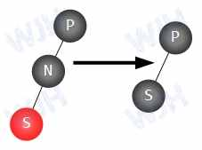
图 9. 删除的节点是黑色 -
要删除的是黑色节点且子节点也是黑色，这就需要检验平衡了，检查替换后的孩子节点，下面一节会说明
-
4.3. 删除时树结构的检查及变化
由上一节我们能了解到需要检查平衡的是要删除的节点与它的子节点N都是黑色的情况，很大程度上简化了树的检查。
我们把替换后的节点用N表示，N是黑色。N的兄弟节点为了不和子节点弄混，我们用B表示。B的2个儿子分别用S1和S2表示。N的父节点称为P。
下面是几种情况:
-
N是根节点，直接设成黑色，退出。（存在递归的情况，这个必须有）
-
B是红色。由性质4和5，及N及N的原始父亲都是黑色可判断，如果B是红色，则它的父亲P是黑色，它的2个子树都是存在的且都是黑色（这点在逻辑过程中判断是否为空很重要）。
我们以N节点是P节点的左孩子为例，需要以P为轴左旋。把B作为最顶层，颜色设为黑色。P的颜色设为红色。这个单元上所有路径上的黑色节点数量不变。这里需注意，N节点的兄弟节点变成了S1。由于N的路径上还少一个黑色节点（已删除的父节点），整体平衡尚未成功，我们仍需努力，还有内部的解决办法，接着往下走。
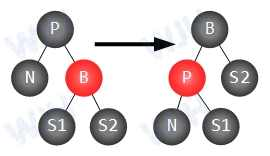
图 10. B为红色时 -
P为黑色，B和它的2个子节点都是黑色（若子节点为空也算是黑色，由于golang的指针没有cpp那么神奇，这里需在逻辑中写明），为了维护单元内的平衡，我们需把B节点设为红色，这样内部黑色节点是平衡的，不过单元整体少了一个黑色节点。自己解决不了那就扔给上一层去解决吧，不在其位不谋其政。这里有个递归需注意。
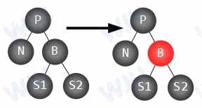
图 11. PB及儿子为黑色 -
如果P是红色，B和它的2个子节点（或空节点）都是黑色，我们只需把P设成黑色，B设成红色即可，还记得情形1中的那种情况吗？这样就补全丢失的黑色了
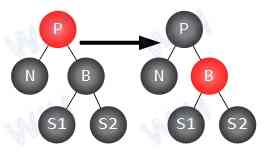
图 12. P是红色 -
如果B是黑色，S1是红色，S2是黑色（N是P的左孩子的情况下）。则需以B为轴进行右旋，让B的左子树指针变空（为了统一到第6种情况处理），这时N的路径还还少一个黑色节点
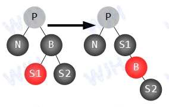
图 13. S1是红色 -
大部分情况都考虑的差不多了，还有一种情况就是B节点为黑色，B节点的右孩子为红色（5形成的这种情况）。这时需要以P为轴进行左旋，然后交换P与B的颜色，即P为黑色，B未知。S2变为黑色。这样使单元内恢复平衡，且整个树的各个路径与删除前一致
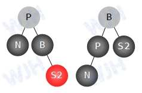
图 14. S2是红色
树的删除分析就结束了，下面是实现代码：
// 删除对外方法
func (rbtree *RBTree) Delete(data int64) {
rbtree.delete_child(rbtree.root, data)
}
// 删除节点
func (rbtree *RBTree) delete_child(n *RBNode, data int64) bool {
if data < n.value {
if n.left == nil {
return false
}
return rbtree.delete_child(n.left, data)
}
if data > n.value {
if n.right == nil {
return false
}
return rbtree.delete_child(n.right, data)
}
if n.right == nil || n.left == nil {
// 两个都为空或其中一个为空，转为删除一个子树节点的问题
rbtree.delete_one(n)
return true
}
//两个都不为空，转换成删除只含有一个子节点节点的问题
mostLeftChild := n.right.getLeftMostChild()
tmpval := n.value
n.value = mostLeftChild.value
mostLeftChild.value = tmpval
rbtree.delete_one(mostLeftChild)
return true
}
// 删除只有一个子节点的节点
func (rbtree *RBTree) delete_one(n *RBNode) {
var child *RBNode
isadded := false
if n.left == nil {
child = n.right
} else {
child = n.left
}
if n.parent == nil && n.left == nil && n.right == nil {
n = nil
rbtree.root = n
return
}
if n.parent == nil {
n = nil
child.parent = nil
rbtree.root = child
rbtree.root.color = BLACK
return
}
if n.color == RED {
if n == n.parent.left {
n.parent.left = child
} else {
n.parent.right = child
}
if child != nil {
child.parent = n.parent
}
n = nil
return
}
if child != nil && child.color == RED && n.color == BLACK {
if n == n.parent.left {
n.parent.left = child
} else {
n.parent.right = child
}
child.parent = n.parent
child.color = BLACK
n = nil
return
}
// 如果没有孩子节点，则添加一个临时孩子节点
if child == nil {
child = NewRBNode(0)
child.parent = n
isadded = true
}
if n.parent.left == n {
n.parent.left = child
} else {
n.parent.right = child
}
child.parent = n.parent
if n.color == BLACK {
if !isadded && child.color == RED {
child.color = BLACK
} else {
rbtree.deleteCheck(child)
}
}
// 如果孩子节点是后来加的，需删除
if isadded {
if child.parent.left == child {
child.parent.left = nil
} else {
child.parent.right = nil
}
child = nil
}
n = nil
}
// deleteCheck() 删除验证
func (rbtree *RBTree) deleteCheck(n *RBNode) {
if n.parent == nil {
n.color = BLACK
return
}
if n.getSibling().color == RED {
n.parent.color = RED
n.getSibling().color = BLACK
if n == n.parent.left {
rbtree.rotateLeft(n.parent)
} else {
rbtree.rotateRight(n.parent)
}
}
//注意：这里n的兄弟节点发生了变化，不再是原来的兄弟节点
is_parent_red := n.parent.color
is_sib_red := n.getSibling().color
is_sib_left_red := BLACK
is_sib_right_red := BLACK
if n.getSibling().left != nil {
is_sib_left_red = n.getSibling().left.color
}
if n.getSibling().right != nil {
is_sib_right_red = n.getSibling().right.color
}
if !is_parent_red && !is_sib_red && !is_sib_left_red && !is_sib_right_red {
n.getSibling().color = RED
rbtree.deleteCheck(n.parent)
return
}
if is_parent_red && !is_sib_red && !is_sib_left_red && !is_sib_right_red {
n.getSibling().color = RED
n.parent.color = BLACK
return
}
if n.getSibling().color == BLACK {
if n.parent.left == n && is_sib_left_red && !is_sib_right_red {
n.getSibling().color = RED
n.getSibling().left.color = BLACK
rbtree.rotateRight(n.getSibling())
} else if n.parent.right == n && !is_sib_left_red && is_sib_right_red {
n.getSibling().color = RED
n.getSibling().right.color = BLACK
rbtree.rotateLeft(n.getSibling())
}
}
n.getSibling().color = n.parent.color
n.parent.color = BLACK
if n.parent.left == n {
n.getSibling().right.color = BLACK
rbtree.rotateLeft(n.parent)
} else {
n.getSibling().left.color = BLACK
rbtree.rotateRight(n.parent)
}
}5. 后记
第一次这么写东西实在是没经验，也没计划好时间，本来计划是拿来练手的，原本计划一天写完，没想中途遇上各种问题，拖了将近2天才完成。不过一回生二回熟，相信如果下一次再碰到这种情况就快多了。
说实话，我写的这些里面介绍golang的很少，主要是红黑树的逻辑。在用golang实现的过程中，我也参考了一些Docker等框架源码的写法或方式。给我的感觉是这个语言很特别，单从代码结构上就能感觉出来，语法类似C语系，不过一个类型名后置就能感受到它的不同。期间也尝试着写服务，试着写过几个route，效率、负载什么的还没具体测试，不过从构建方式上就能感觉到它确实很方便。用不用先放在一边，看一看还是有好处的。
![]()